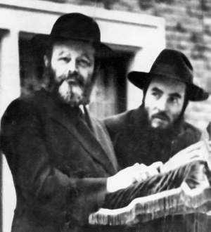
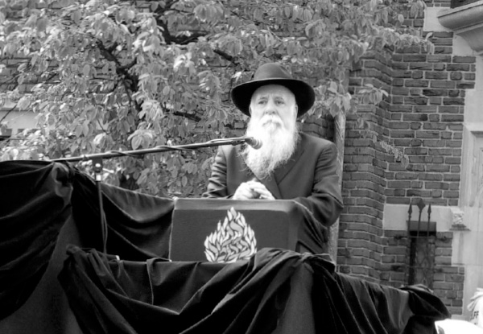

Stories of Our Rebbeim
MEMORIES FROM MY FATHER, UNCLE YOSSI Beis Moshiach presents a collection of anecdotes from Rabbi Yosef (“Uncle Yossi”) Goldstein, of blessed memory.

I was standing in front of 770 when the Rebbe came by, walked over to me, and thanked me with “a groisen Yasher Ko’ach.” He then said, “You see, R’ Yosef, there is nothing that stands in the way of one’s will. You can achieve anything if you truly will to do so!”
Here is the whole story:
It was during the war years of 5703-5704. The Rebbe Rayatz announced that we should divide the Mishnayos by lottery, and then write down which Mishnayos each person got on a postcard. The postcard was then sent to the person’s house. In this manner, the whole Talmud was covered.
The Rebbe came to me because the job of printing the postcards had to be done overnight. I had been sleeping at the time in the dormitory (then located downstairs in 770).
I had to go home and show my father the layout, the wording, and the whole text to appear on the postcard (the Rebbe gave me the format). It was very late at night, and my father said that he can finish it by the following day.
“NO, NO, NO,” I said, “it must be done tonight.” Of course, I begged him nicely, showing the proper respect as a son should, with humility and subservience – and HE DID IT! When I brought it to the Rebbe, the ink was still wet from the press!
“Nu,” the Rebbe said, “there’s nothing that can obstruct one’s will.”
My father printed little notes with the words “Immediate repentance, immediate Redemption,” and bachurim would stick them up any place, on a pole, on a window, etc. The first wave of publicity was through my father’s activities, and he must have a tremendous merit for this in Heaven.
I was in front of 770 one evening when the Rebbe saw me and called me over. He told me to rush to Borough Park and have the print job brought right back. I left it by the Merkos office (the Rebbe was not there at the time), and later the Rebbe got it and he gave me a big “Yasher Ko’ach.”
I remember seeing the Rebbe Rayatz sitting up on the porch at 770 and saying Mishnayos by heart…
T’KIAS SHOFAR
One year during the Rosh HaShana davening, Rabbi Avraham Weingarten, of blessed memory, and I were in the room of the Rebbetzin Nechama Dina. At the time of T’kios they opened the door. The previous Rebbe was sitting in the yechidus room where he davened. The room was packed, you couldn’t put a needle in, yet we managed to get through the door. As I entered, I was facing the Rebbe Rayatz’s desk. I watched the Rebbe take his tallis and put it like you see in the pictures of the Rebbe on Erev Yom Kippur. He held the tallis like a square and made it like a little tent. As he called out the p’sukim “Min HaMeitzar Karasi Kah” in a very soft voice, I looked at the top of his tallis and it was wet from sweat and tears! Everyone around was sobbing. I was just a young teenager then and a bachur doesn’t usually cry in public. Nevertheless, as I looked around, the whole congregation was crying. Nu, I also began to cry…
Rabbi Berel Rivkin blew the shofar, while the Rebbe Rayatz indicated what to blow. However, he didn’t call it out. The Rebbe pointed to the word of the t’kios, and as long as the Rebbe kept his finger on the word, that’s how long R’ Berel would hold the note. For example, when he came to T’rua, his face turned red as a beet, because the Rebbe didn’t take his finger off! But R’ Berel Rivkin was a chacham, and he took a very deep breath before blowing…. T’kia and Sh’varim also took a fair amount of time. When the Rebbe picked up his finger, he stopped. Fortunate are those who witnessed this event…

AN ATTENTIVE EAR
Sholom Hecht, Nissan Gordon, and I were sitting in the beis midrash. It was extremely quiet, during the break just before Mincha, and we had just finished learning. We started talking about things that you don’t specifically have to be in a beis midrash to discuss.
Suddenly, the Rebbe walked in and sat down on the bench under the big clock, by the double – doors. Sometimes, he would come in during the day, sit down with a Gemara, put his head on his hand, and his eyes would scan through the whole seifer. I nudged my friends and said, “Watch out – the Ramash is here”.
“Yes,” the Rebbe said, “and I hear everything you are saying” (I think he said it in English).
A GLASS OF TEA
Once after Yud Shvat 5710, the Rebbetzin Nechama Dina knew that the Rebbe had been at the Ohel the whole day and hadn’t had anything to eat yet. When the Rebbetzin Chaya Mushka complained about this to her mother, she sent down a glass of tea with R’ Moishe Teleshevsky.
When he knocked, the Rebbe answered the door and R’ Moishe said: “The shvigger asked that I give this to you.” The Rebbe replied: “That was the first part of the shlichus. Now, carry out the second part. Drink it!”
A CLEAR LASHON
I remember going to the third floor of the Rebbe Rayatz’s residence on Shmini Atzeres. The place was packed, and the Rashag was saying Chassidus. His face was red, and his manner of expression was so clear, even the rafters understood what he said. He had a very beautiful lashon, what they call sfas chalakos [smooth lips].
OPEN FOR ME THE GATES OF RIGHTEOUSNESS
One year, on the morning of Shabbos Mevarchim Iyar, I came to 770 at half past seven, which was the time when the beis midrash was opened. I knocked and then suddenly the door opened. I looked inside – and there was the Rebbe! He had come in earlier…
All I could say was “Antshuldikt” [Sorry]. The Rebbe “opened many doors” for me…
HOLY LEFTOVERS
At the Yom tov meal, they used to take the plate away from the Rebbe Rayatz when he finished eating. However, he didn’t finish the whole thing, taking just a spoonful or two. They would then pass it through the crowd, and by the time the plate would get to the door, it had been picked clean. Everyone grabbed shirayim – whether it was fish or chicken.
EXTRA CARE ON SEDER NIGHT
I remember how on Pesach night the Rebbe was careful never to put his siddur or his Hagada on the table. He wouldn’t eat the matza unless he wiped his lips with napkins beforehand. Afterward, since he didn’t want to put the napkin with which he wiped his mouth on the table, he would drop it under his chair.
Thus, after the Seder, you’d find a pile of the Rebbe’s napkins under his chair. They went from the floor into my pocket, and from my pocket, I put them into an envelope where I still have them.
Yes, even before 5710, I had the scent of a Lubavitcher…
AND THE FEAR OF YOUR TEACHER
The Rebbe would always sit or stand on the Rebbe Rayatz’s left side, and he would keep looking at him while standing or sitting like a statue. He didn’t move! Frozen!
Even after 5710, the Rebbe would sit and look at the Rebbe Rayatz’s chair. He still sat on the left side, while continually staring at that chair. Especially during Pesach at the Seder table, he would wait and wait and then take the matza. Wait and wait and then take the maror…
RAISING UP THE FALLEN
I was told (I think by Moishe Groner) that once there was an extremely large crowd around the Rebbe Rayatz’s table. Because of the huge crowd and pushing, one of the legs broke. Since the Rebbe didn’t want it to fall on the Rebbe Rayatz, he supported the table with his knee. The Rebbe limped for some time afterward.
I HAVE NOT CHANGED
When the Rebbe was with the Rebbe Rayatz until late at night, he would come down into the beis midrash to daven Maariv.
One time during S’firas HaOmer I had the privilege of standing in the corner and watching the Rebbe make the touching motions with his thumb and fingers – Chesed Sh’B’G’vura, Ana B’Ko’ach Gedulas Yemincha – according to Kabbalah. He had both hands together, and the fingers moved around by Ana B’Ko’ach. He placed his open right hand over his closed left hand, while he was moving one finger, then the second finger, and then the third.
He used the exact same movements when he davened Maariv alone as when everyone was there.
I was in charge of putting out the lights in the beis midrash. There were times that I didn’t want to put out the lights because I knew that the Rebbe hadn’t come down yet. Therefore, I would leave on the lights of the Menorah before the amud. It was a beautiful sight.
THE BODY MUST FOLLOW THE HEAD
If we would come home [to 346 New York Ave.] at the same time the Rebbe did, we would go up together in the elevator. However, I never uttered a word.
There was one instance when the Rebbe saw me coming, and in order to avoid a situation where we might converse, he walked up the steps instead. However, he used to leap up the stairs.
EYES LIKE DOVES
The Rebbe used to turn around and wave to the Rebbetzin as he walked down President Street.
When he would cross the street, she would be near the window. She would wait to see how he crossed the street. When he crossed the street and he would pass a few houses, he would turn around, and give a sort of wave to her that everything is all right. She would then wave back.
This was after he crossed New York Avenue. It’s a very large avenue with no red light, and he used to jaywalk as he crossed the street. Once, as I was traveling along President Street, I saw someone coming out between the cars. I gave a beep and I was very sorry. It was the Rebbe.
I met the Rebbetzin on many occasions while I was in my car. She would be standing on the corner waiting for the light to change, so I would tilt my head with respect, and she’d smile and tilt back. She was simply elegant. Royal.
THERE IS AN APPOINTED TIME
At the end of a regular meeting with the Rebbe about Beis Rivka, Rabbi Jacobson took an envelope out of his pocket and said to the Rebbe, “It’s just too difficult to come in at night…” It was always packed with people, similar to dollars, and he simply couldn’t get in. Therefore, he asked the Rebbe if he could give him his Pa”N now.
The Rebbe replied: “Der vemen du vilst iz itzt nisht da” [the person you want is not here now].
AND YOUR EYES SHALL SEE YOUR TEACHER
One Shabbos morning, I was learning Chassidus with Yossel Raices in the cheider sheini. As we came to the part in the Rebbe Rashab’s Hemshech 5666 where it says, “And your eyes shall see your teacher,” the Rebbe walked into the room – just as we said the pasuk! We were the only ones there at the time. The Rebbe liked to know that “di tzvei Yosselech lernen tzuzamen” [the two Yossels are learning together].
MORE LEFTOVERS FROM THE RAYATZ
Once I was upstairs, and the maid was walking out of the Rebbe Rayatz’s room. She had a tray with bread and cabbage soup, and it seemed that someone broke off or bit into the bread. She “turned this way and that way, and saw that there was no man,” and then said to me, “Excuse me, take it – un gei gezunterheit.” I came down to the beis midrash, and I gave everyone a little bit of it.
AD MASAI?
Sholom Hecht and I walked into the Rebbe’s room. The Rebbe was sitting next to the small telephone by the window – one of the old rotary phones. I was holding the typewriter turning the wheel while I talked to him. The door was still open. “The ‘HaKria V’HaK’dusha’ said about the year 5708, that everything is going to take place,” we said. It was already 5709…
We asked the Rebbe about how “HaKria V’HaK’dusha” had noted that everything had occurred in a Hebrew year ending with an eight – the Exodus from Egypt, the Destruction of the Beis HaMikdash, et al. In the words of the editor, “Since Ches (8) is such a lofty number, the Redemption will surely have been completed by 5708.” It was written in black and white. I had it right there in front of me…
The Rebbe then started to relate how R’ Saadia Gaon had given a keitz (a set time for the Geula), as did Rashi, Rambam, and the Tzemach Tzedek. 5666, the year of the Rebbe Rashab’s hemshech, had also been a keitz. Thus, if we were worthy, there were a few years until the next Ches…
DERECH MITZVOSECHA
Once when I was sleeping in my room downstairs in 770, there was banging at the door. Berel Baumgarten had let me borrow his copy of Derech Mitzvosecha, a very prized commodity in those days. The Rebbe knew that Berel Baumgarten had one, and Berel told the Rebbe that he had lent it to me. Someone came to my room, knocked at the door, and said: “The Rebbe wants to see the Derech Mitzvosecha.” He wanted to look up something on the pasuk in Iyov regarding the “portion of G-d Above.” The Rebbe recalled that the Tzemach Tzedek had included a reference note on that pasuk. Thus, I remember bringing the Derech Mitzvosecha to the Rebbe. He opened it quickly, looked at it, closed it, and gave it back to me.
TORAS SHALOM
When the seifer Toras Shalom came back from the printers, there was no one to help the delivery men take it off the truck. When I saw the problem, I went to help them bring in the s’farim boxes. Rabbi Kazarnovsky and Reb Shmuel [Levitin] went upstairs into the Rebbe Rayatz’s room and gave him a brand new copy of the seifer. With deep emotion, he accepted it and said: “Mit dem iz genug tzu leben zibetzik yahr” – with this is enough to live 70 years.
When the Rebbe came down, he gave me a copy of the seifer as an expression of gratitude. I still have it. There was a number printed in each one, because there was a limited quantity printed. At first they were mimeographed, but later it came out in book form. They left a lot of material out in that version.
HOME FOR LICHT BENTCHEN
Bubby Hinda wrote to the Rebbe Rayatz that she wanted her husband to come home on time on Fridays – at least an hour before Shabbos candle lighting. The Rebbe Rayatz wrote him a letter with instructions that he should be home two hours before licht bentchen.
Very shortly after receiving that letter, he was in a city which was like a valley, two mountains on each side. Whenever there was a big downpour, that place becomes flooded and you needed a boat to get out. It was extremely dangerous. All the cars were just picked up and carried away by the water. He was there on Friday and when he saw the clock, he remembered that he had to be home two hours before Shabbos, so he left to go home. When he arrived home, he heard on the radio that this city was covered in water. He wrote a letter of thanks to the Rebbe.
A CHITAS IN THE CAR
On another occasion, Bubby Hinda asked the Rebbe about the danger of traveling by car. The Rebbe replied that if she has a Chitas in the car, the author will be there with her…
Lgoldstein. "Stories of Our Rebbeim." Beis Moshiach, no. 925 (May 5, 2014).